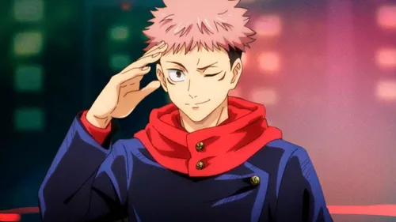
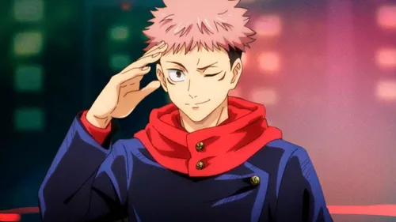
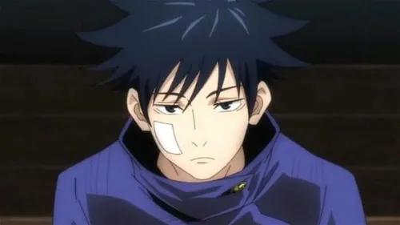
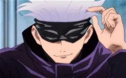

Yuji Itadori
Yuji Itadori es el protagonista principal. Tras comerse un dedo maldito, se convierte en el huésped de Sukuna, el rey de las maldiciones.
Yuji Itadori es el protagonista principal. Tras comerse un dedo maldito, se convierte en el huésped de Sukuna, el rey de las maldiciones.
Megumi Fushiguro es un hechicero del primer año en la Escuela Técnica de Magia Metropolitana de Tokio. Utiliza la técnica de invocación de sombras.
Satoru Gojo Es un hechicero extremadamente poderoso y maestro en la Escuela Técnica de Magia Metropolitana de Tokio
